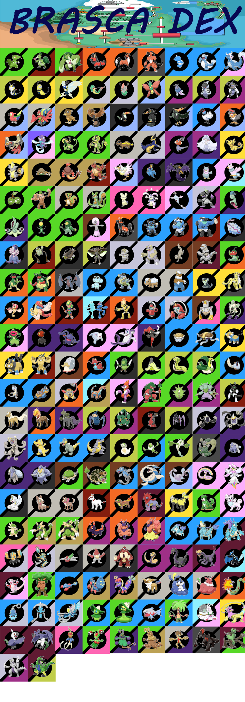

Menu Principal
Home
Fakemon
Monsters
Others
About
-- BRASCA DEX --
(1ª Geração) Inspirado na cultura, fauna e flora Brasileira e alguns países da América latina. Total: 200. Lendários: 8. Início: Janeiro/2016. Término: Dezembro/2016.
